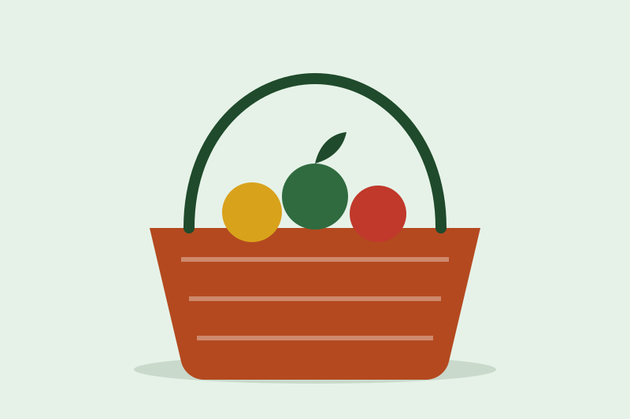
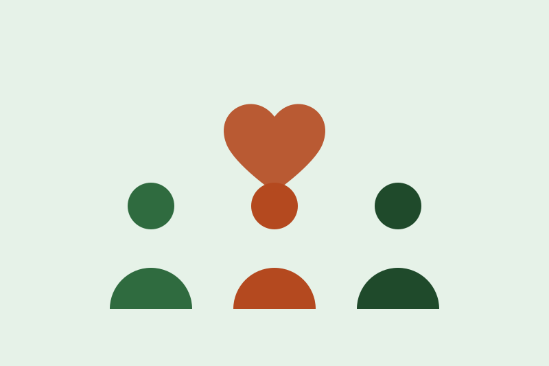
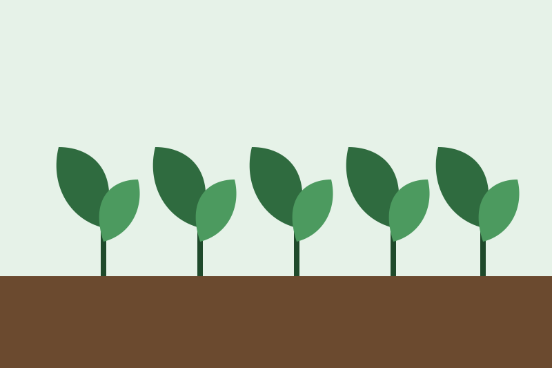
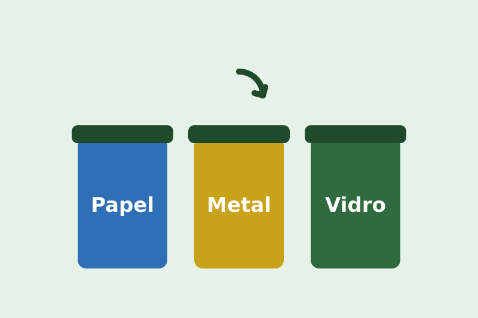
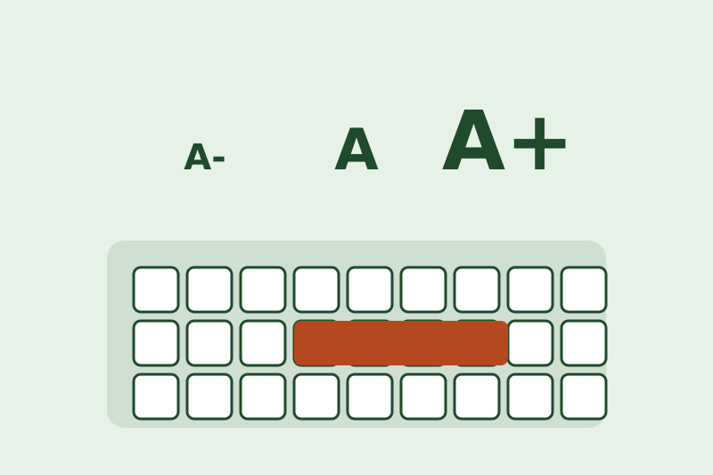
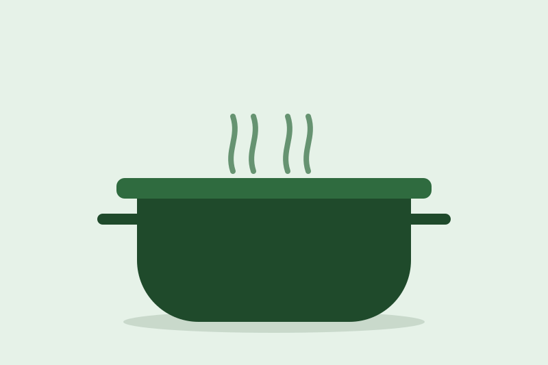

Galeria
Galeria de imagens
Imagens que representam os temas do projeto. Cada uma tem legenda e fonte.

Cesta de doaçãoCesta de vime com frutas e verduras: o excedente que vira doação.Fonte: ilustração autoral da equipe ComPartilha.

ComunidadePessoas unidas em torno de um coração: a rede entre quem doa e quem recebe.Fonte: ilustração autoral da equipe ComPartilha.

Agricultura e hortaHortas e agricultura familiar aproximam o alimento de quem consome.Fonte: ilustração autoral da equipe ComPartilha.

ReciclagemSeparar o lixo é o primeiro passo para reaproveitar materiais.Fonte: ilustração autoral da equipe ComPartilha.

Acessibilidade digitalTexto ajustável e navegação por teclado: o site é para todos.Fonte: ilustração autoral da equipe ComPartilha.

Aproveitamento integralCozinhar com talos, cascas e sobras evita o desperdício.Fonte: ilustração autoral da equipe ComPartilha.
Todas as ilustrações são de autoria da equipe, em SVG (arquivos de 1 a 3 KB), o que mantém o portal leve.